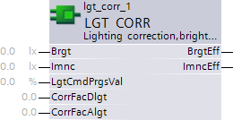

LGT_CORR：灯光校正、亮度和照度
功能
LGT_CORR [FC 446]计算实际有效照度和有效亮度值。有效值是根据传送的传感器值计算得出的，并通过校正因子进行调整。
通过使用照度计进行测量并将该手动测量值除以传感器值来确定校正因子。确定两个校正因子，一种针对日光，另一种针对人造光。
有效照度值是根据实际光进度值和照明器的最大照度计算得出的。
有效亮度值是通过首先计算有效日光值并加上有效照度值来确定的。有效日光值是根据输入参数 Brgt、CorrFactDlgt、CorrFactAlgt 和已确定的 ImncEff 计算的。
功能性
ImncEff 和 BrgtEff 根据公式计算。 FC 检查输入中是否有有意义的值。
对于 ImncEff 计算：
如果 LgtCmdPrgsVal < 0.0，则 ImncEff 将设置为 0.0
如果 Imnc < 0.0，则 ImncEff 将设置为 0.0
对于 BrgtEff 计算：
如果 CorrFacDlgt <= 0.0，则 BrgtEff 将设置为 0.0
如果 CorrFacAlgt <= 0.0，则 BrgtEff 将设置为 0.0
只有当输入参数在有意义的范围内时，才会计算 ImncEff 和 BrgtEff。 ImncEff 和 BrgtEff 只能为 0.0 或正值。如果发生正溢出，值将限制为 REAL_MAX (3.402822e38)。

引脚说明（输入）
Pin | E | O | Description |
布格特 | pa |
| 亮度。 |
免疫组化 | pa |
| 照度。 |
LgtCmdPrgsVal | pa |
| 照明命令进度值。 |
CorrFacDigt | pa |
| 日光修正系数。 |
CorrFacAlgt | pa |
| 人造光校正系数。 |
引脚描述（输出）
Pin | E | O | Description |
BrgtEff | a |
| 有效亮度。 |
ImncEff | a |
| 有效照度。 |
引脚数据
Pin | Description | Data type | Default value | E.g. Engineering unit or Text group | Min. | Max. | Pin type |
布格特 | 亮度 | REAL | 0.0 | lx | 0.0 | 3.402822e38 | In |
免疫组化 | 照度 | REAL | 0.0 | lx | 0.0 | 3.402822e38 | In |
LgtCmdPrgsVal | 照明命令进度值 | REAL | 1.0 | % | 0.0 | 3.402822e38 | In |
CorrFacDlgt | 日光修正系数 | REAL | 1.0 | – | 0.0 | 3.402822e38 | In |
CorrFacAlgt | 人造光修正系数 | REAL | 1.0 | – | 0.0 | 3.402822e38 | In |
BrgtEff | 有效亮度 | REAL | 0.0 | lx | 0.0 | 3.402822e38 | 出去 |
ImncEff | 有效照度 | REAL |
| lx | 0.0 | 3.402822e38 | 出去 |
工程及调试
Configure brightness sensor correction function
需要校准，因为传感器安装在天花板上，并且亮度必须控制在表 /desk 级别。
需要校准的照度计才能获得可靠的配置结果。
考虑内部光传感器的测量范围。 （例如 UP258 20…1000 lx）
请按如下方式进行：
- Measure first in a dark room, preferably without daylight.
- Measure the illuminance of the lamp at 100% output with a lux-meter on the table.
- Enter this value under parameter Inmc.
- Calculate CorrFacAlgt = Inmc / Brgt (value measured by the brightness sensor)
- Enter the value under parameter CorrFacAlgt.
- Now measure under normal daylight conditions in the room. In other words, lighting is switched off. Room brightness should be approximately 500 lx.
- Calculate CorrFacDlgt = brightness as measured with lux-meter / Brgt (value measured by the brightness sensor)
- Enter the value under parameter CorrFacDlgt.